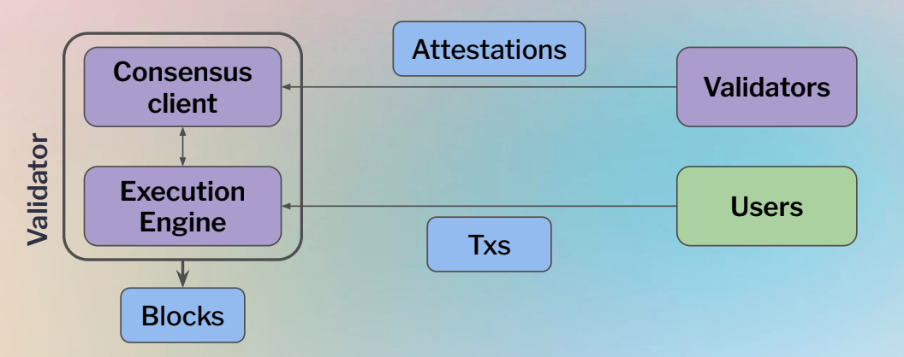
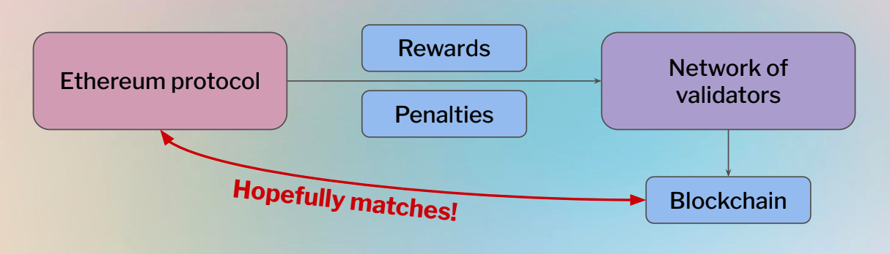
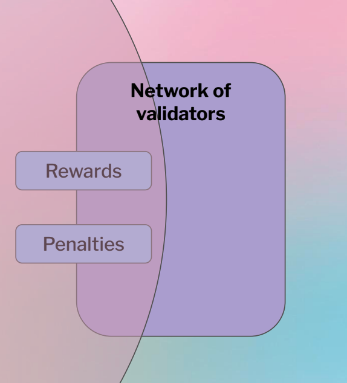
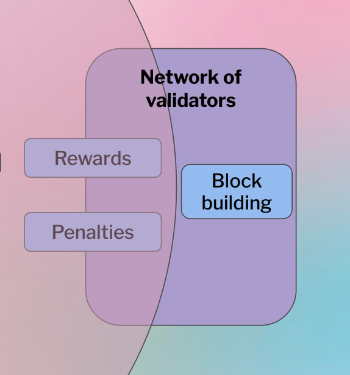

<!doctype html>
<html lang="en">
  <head>
    <meta charset="utf-8">

    <title> Staking On Ethereum </title>

    <meta name="author" content="Dhruvin Parikh">

    <meta name="apple-mobile-web-app-capable" content="yes" />
    <meta name="apple-mobile-web-app-status-bar-style" content="black-translucent" />

    <meta name="viewport" content="width=device-width, initial-scale=1.0, maximum-scale=1.0, user-scalable=no, minimal-ui">

    <link rel="stylesheet" href="../../../reveal.js/css/reveal.css">
    <link rel="stylesheet" href="../../../reveal.js/css/theme/moon.css" id="theme">

    <!-- Code syntax highlighting -->
    <link rel="stylesheet" href="../../../reveal.js/lib/css/zenburn.css">

    <!-- Printing and PDF exports -->
    <script>
      var link = document.createElement( 'link' );
      link.rel = 'stylesheet';
      link.type = 'text/css';
      link.href = window.location.search.match( /print-pdf/gi ) ? '../../../reveal.js/css/print/pdf.css' : '../../../reveal.js/css/print/paper.css';
      document.getElementsByTagName( 'head' )[0].appendChild( link );
    </script>

    <!--[if lt IE 9]>
    <script src="../reveal.js/lib/js/html5shiv.js"></script>
    <![endif]-->

    <style>
      .reveal .slides h1, .reveal .slides h2, .reveal .slides h3 {
        text-transform: none;
      }

      .two-column {
        display: flex;
        flex-wrap: wrap;
      }

      .two-column em {
        margin: 20px;
      }

      .credits {
          font-size: small;
      }

      .left {
              left:-8.33%;
              text-align: left;
              float: left;
              width:49%;
              z-index:-10;
            }
      
    .right {
        left:31.25%;
        top: 75px;
        text-align: left;
        float: right;
        z-index:-10;
        width:49%;
    }
    </style>
  </head>

  <body>
    <div class="reveal">
      <div class="slides">

<!------------------------------------------------------->


<section data-markdown><script type="text/template">

### Metana Web3 Solidity Bootcamp

#### Staking On Ethereum 

*Dhruvin Parikh, April 2023*

</script></section>

<section data-markdown><script type="text/template">

## Lesson Topics

* Staking
 * Solo staking
 * Pooled Staking
 * Staking as a service
 * Centralized staking
* Pooled staking
 * Rocketpool
 * Stakefish
 * Lido Finance

</script></section>

<section data-markdown><script type="text/template">

## Protocol proposer problem
* Validators run the protocol, but do they run it honestly?
* System of rewards and penalties ensures compliance, but is it enough?

</script></section>

<section data-markdown><script type="text/template">

## Validators
* To become a validator, you lock up 32 ETH in the deposit contract
* After activation, validator is called upon to perform consensus duties:
 * **Block proposals**: Make a block containing consensus and execution data
 * **Attestations**: Provide their view of the consensus, finalise blocks


</script></section>

<section data-markdown><script type="text/template">

## Protocol rewards
* Protocol specifies rewards and penalties
* **Rewards**
 * **Block reward** for block proposal/correct voting
 * **Transaction fees** from execution payload
* **Penalties:** Inactivity penalty + Slashing for attributable consensus fault


</script></section>

<section data-markdown><script type="text/template">

## Ethereum protocol

</script></section>

<section data-markdown><script type="text/template">

## Ethereum protocol

</script></section>

<section data-markdown><script type="text/template">

## Validators as block producers
* Protocol lets validators-as-block-producers consume resources
* Protocol constrains supply to guarantee low verification costs
* Validators produce blocks meeting demand for transactions with supply of resources

</script></section>

<section data-markdown><script type="text/template">

## Proposer-agent problem
* Ethereum protocol entrusts its execution in the hands of validators.
* Turns out, validators themselves outsource some of their core functions!
* Let's see how

</script></section>

<section data-markdown><script type="text/template">

## Block construction in Proof-of-Work
* Let searchers bid for bundle inclusion at top-of-block
* Auction between block proposer and searchers

</script></section>


<section data-markdown><script type="text/template">

## Block construction in Proof-of-Stake
* In PoS, auction for top-of-block doesn’t work
* Trust model is different with solo validators...
* Idea: **Validators** receive full blocks from builders, builders bid for inclusion Searchers

</script></section>

<section data-markdown><script type="text/template">

## Block building in PoS

</script></section>

<section data-markdown><script type="text/template">

## Ethereum protocol

</script></section>


<section data-markdown><script type="text/template">

### Risks of outsourcing: Censorship resistance

* Ethereum protocol: Include any and all transaction which pays the fee
* Protocol-Proposer problem: Individual proposers may censor transactions
* Large decentralisation of the validator set ⇒ Someone includes!

</script></section>

<section data-markdown><script type="text/template">

### Risks of outsourcing: Censorship resistance

* Proposer-Builder problem: Builders may censor individual transactions,
despite proposer’s preferences ⇒ Agency cost!
* Solution: Proposers require inclusion of some transaction list by their builders

</script></section>

<section data-markdown><script type="text/template">

## Staking
* With respect to ETH2.0
 * Staking is the act of depositing 32 ETH to activate validator software. 
 * As a validator you’ll be responsible for storing data, processing transactions, and adding new blocks to the blockchain. 
 * This will keep Ethereum secure for everyone and earn you new ETH in the process.
</script></section>

<section data-markdown><script type="text/template">

## Need for Staking
* Security
* Incentive
* Sustainability
</script></section>

<section data-markdown><script type="text/template">

## Approaches to ETH staking
* Solo home staking
* Staking as a service
* Pooled Staking
* Centralized Exchanges
</script></section>


<section data-markdown><script type="text/template">

## Solo home staking
* Run own Ethereum node and connect to Internet
* Deposit 32 ETH to beacon chain deposit contract directly
* Control of keys remains with node operator
* e.g. Rocketpool CLI, Vouch + Dirk, Avado, Stereum, Ethereum on Arm, eth-docker, DAppNode
<br/>[More Information](https://ethereum.org/en/staking/solo/)
</script></section>


<section data-markdown><script type="text/template">

## Staking as a service

* Similar to Solo staking, except
 * A third party will run Run node for you
* Signing keys needs to be uploaded to the operator
* e.g. BloxStaking, Abyss Finance, Kiln, Allnodes
* KeyGen : Wagyu, ethdo, Avado
<br/>[More Information](https://ethereum.org/en/staking/sass/)
</script></section>

<section data-markdown><script type="text/template">

## Pooled staking

* For users who do not feel comfortable staking 32 ETH.
* Many of these options include what is known as 'liquid staking' which involves an ERC-20 liquidity token that represents your staked ETH.
* Liquid staking is as simple as a token swap. 
 * Users can hold their assets in their own wallet.
* Pooled staking is not native to the Ethereum network. Third parties are building these solutions, and they carry their own risks.

</script></section>

<section data-markdown><script type="text/template">

## Liquid staking

* Validators are no longer principals, but agents of a set of tokenholders/depositors
* Lido, Rocketpool, diva

</script></section>

<section data-markdown><script type="text/template">

## Restaking staking

* Validators may submit themselves to additional slashing conditions, in order to receive extra yield, e.g., secure more systems, taking second, third, fourth... mortgage on your PoS stake

</script></section>

<section data-markdown><script type="text/template">

## Rollups

* Secured by L1, since they pay for data availability to the protocol
* They also require sequencers / builders to make their blocks

</script></section>

<section data-markdown><script type="text/template">

## Ethereum protocol


</script></section>

<section data-markdown><script type="text/template">

## Centralized exchanges

* If you are not yet comfortable holding ETH in your own wallet. CEX can be a fallback to allow you to earn some yield on your ETH holdings with minimal oversight or effort.

</script></section>

<section data-markdown><script type="text/template">

## Centralized exchanges trade-offs

* centralized providers consolidate large pools of ETH to run large numbers of validators. This can be dangerous for the network and its users as it creates a large centralized target and point of failure, making the network more vulnerable to attack or bugs.

<br/>[Ethereum wallets](https://ethereum.org/en/wallets/find-wallet/)
</script></section>

<section data-markdown><script type="text/template">

## More Readings

* [Evaluating Staking Services](https://www.attestant.io/posts/evaluating-staking-services/)
* [Staking withdrawals](https://ethereum.org/en/staking/withdrawals/)
* [Ethereum Staking Knowledge Base](https://kb.beaconcha.in)
* [What is Rocket Pool](https://pintu.co.id/en/academy/post/what-is-rocket-pool)
* [staking withdrawals](https://ethereum.org/en/staking/withdrawals/)
* [staking withdrawals example](https://goerli.etherscan.io/address/0xea2B90Cd0443eAC26C25c5243842aB68449579Be#withdrawals)
* [Gasper](https://ethereum.org/en/developers/docs/consensus-mechanisms/pos/gasper/)
* [eth2 quick update no. 19 : Contract deployment, Genesis deposits, Bootstrap consensus](https://blog.ethereum.org/2020/11/04/eth2-quick-update-no-19)
* [The Genesis of a Beacon Chain](https://hackmd.io/@benjaminion/genesis)
* [The Future of MEV is SUAVE](https://writings.flashbots.net/the-future-of-mev-is-suave/)
</script></section>


<section data-markdown><script type="text/template">

## References

* [Staking with Ethereum](https://ethereum.org/en/staking/)

</script></section>

<section data-markdown><script type="text/template">

## End

</script></section>


<!------------------------------------------------------->


      </div>

    </div>

    <script src="../../../reveal.js/lib/js/head.min.js"></script>
    <script src="../../../reveal.js/js/reveal.js"></script>

    <script>

      // Full list of configuration options available at:
      // https://github.com/hakimel/reveal.js#configuration
      Reveal.initialize({
        controls: true,
        progress: true,
        history: true,
        center: true,

        transition: 'none', // none/fade/slide/convex/concave/zoom

	math: {
          mathjax: '../../../lib/MathJax/MathJax.js',
          config: 'TeX-AMS_SVG-full',
	},

        // Optional reveal.js plugins
        dependencies: [
          { src: '../../../reveal.js/plugin/markdown/marked.js', condition: function() { return !!document.querySelector( '[data-markdown]' ); } },
          { src: '../../../reveal.js/plugin/markdown/markdown.js', condition: function() { return !!document.querySelector( '[data-markdown]' ); } },
          { src: '../../../reveal.js/plugin/highlight/highlight.js', async: true, callback: function() { hljs.initHighlightingOnLoad(); } },
          // { src: '../../../reveal.js/plugin/math/math.js', async: true },
           // Zoom in and out with Alt+click
           { src: "../../../reveal.js/plugin/zoom-js/zoom.js", async: true },
        ]
      });

    </script>

  </body>
</html>
